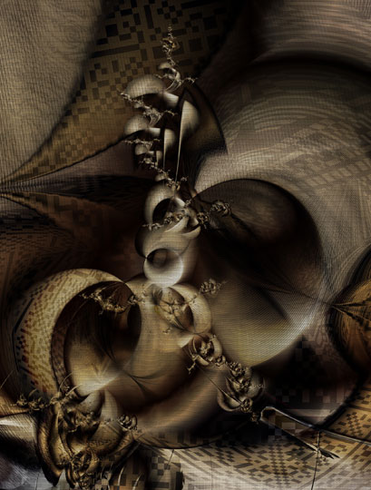
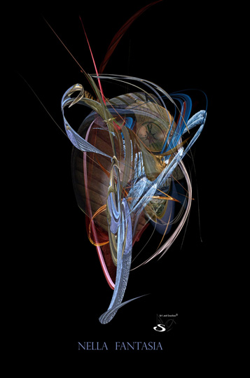
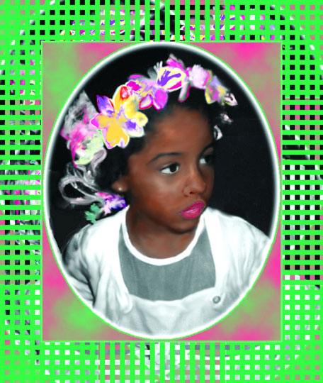
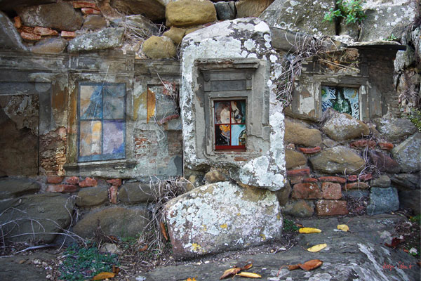
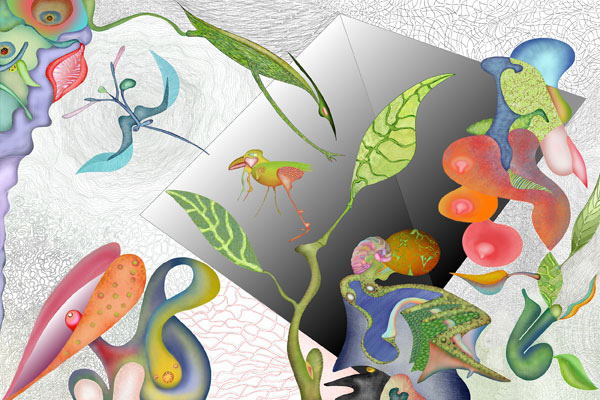
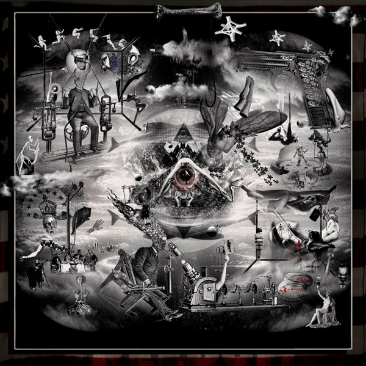
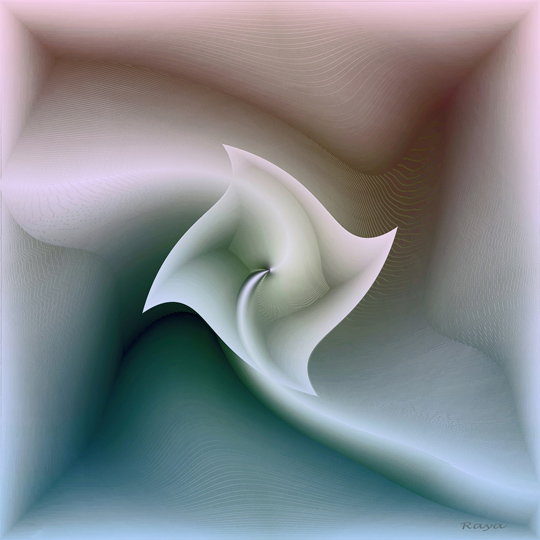
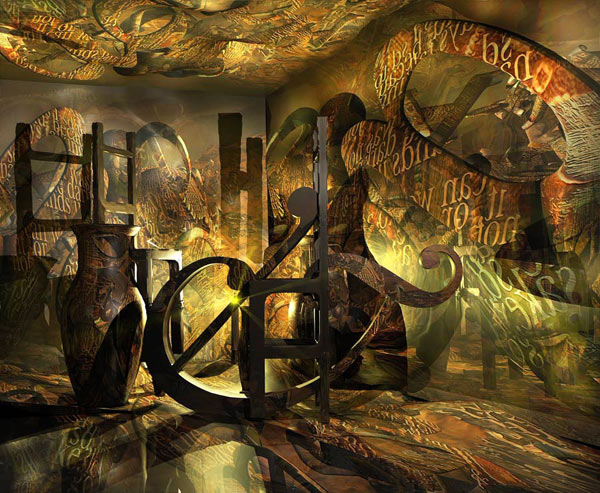
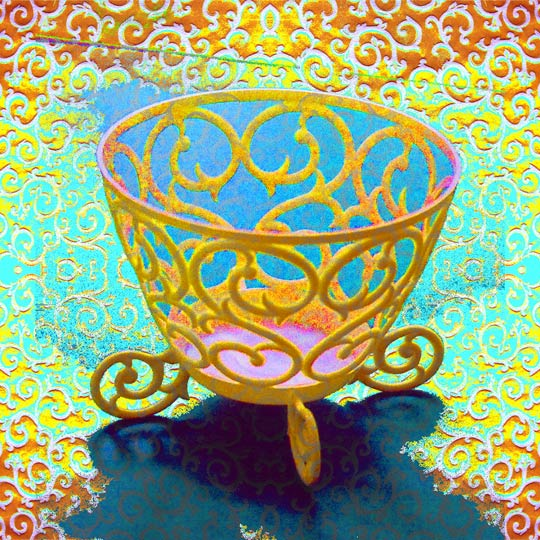

Arcane Carvings 
by Rick Spix
09/21/2021
Nella Fantasia 
by Christina Seibold
09/22/2021
An American Girl 
by Verneda Lights
09/23/2021
Rocky Town, 2009 
by Helga Schmitt
09/24/2021
The Abyss 
by Bjoern Daempfling
09/25/2021
The Resurrection of Freedom 
by Bernd Dreilich
09/26/2021
Suction 
by Raya Grinberg
09/27/2021
Utopia
by Karin Kuhlmann
09/28/2021
Lost Poem Redux 
by Peter Ciccariello
09/29/2021
Patterns of Desire 
by Clay Bodvin
09/30/2021